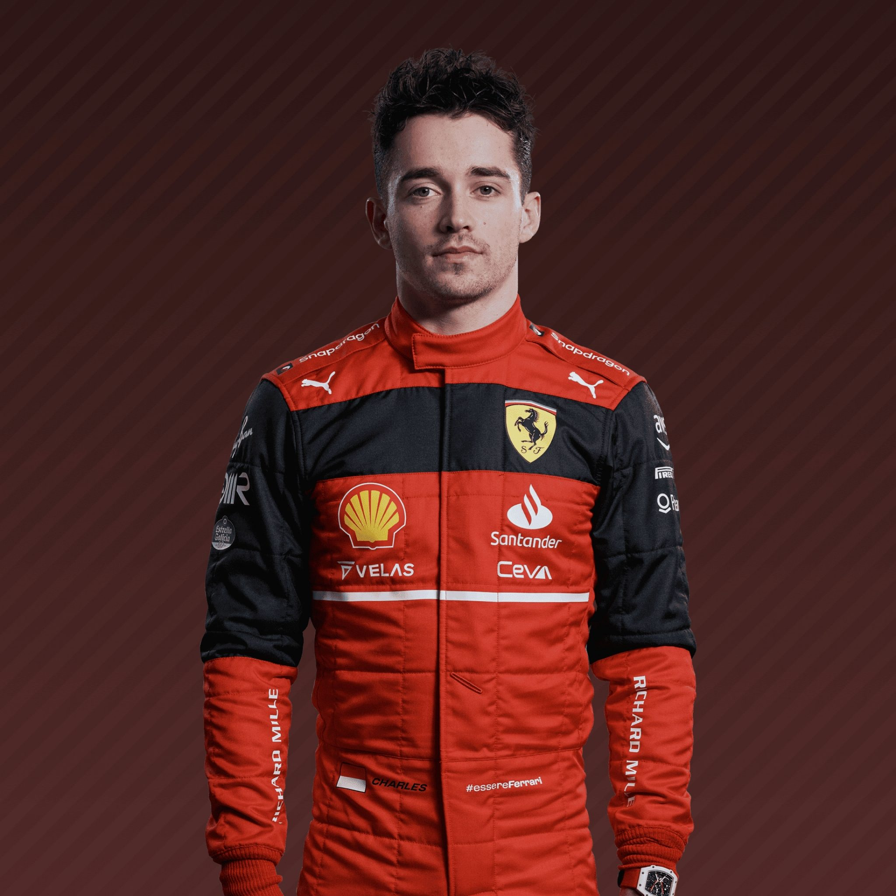
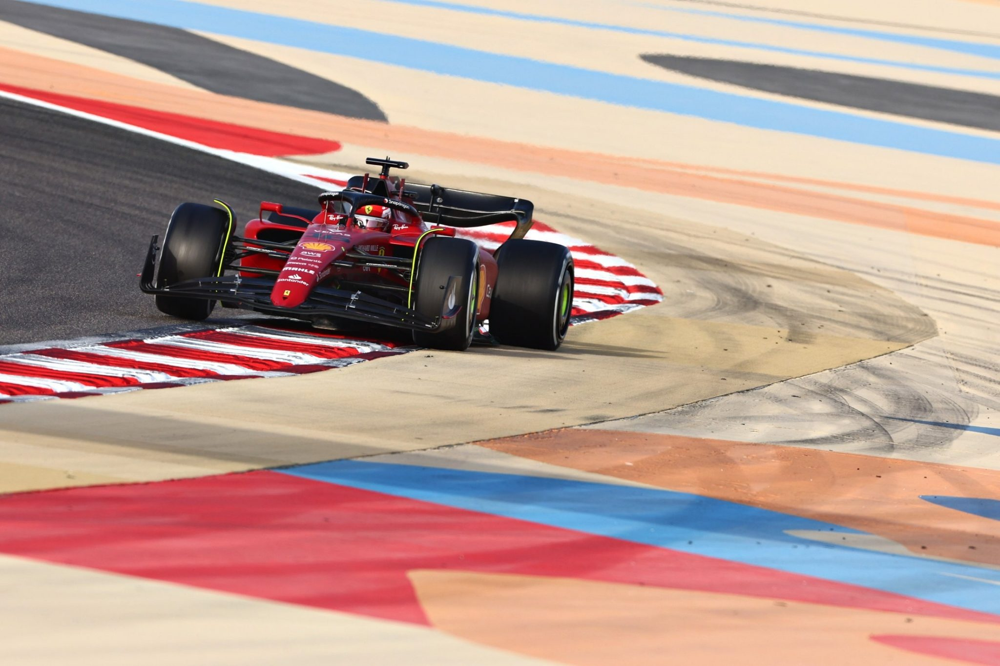
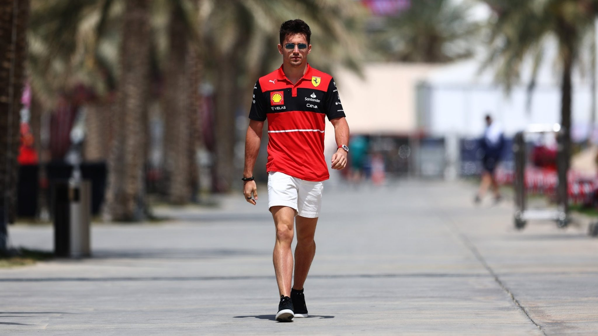
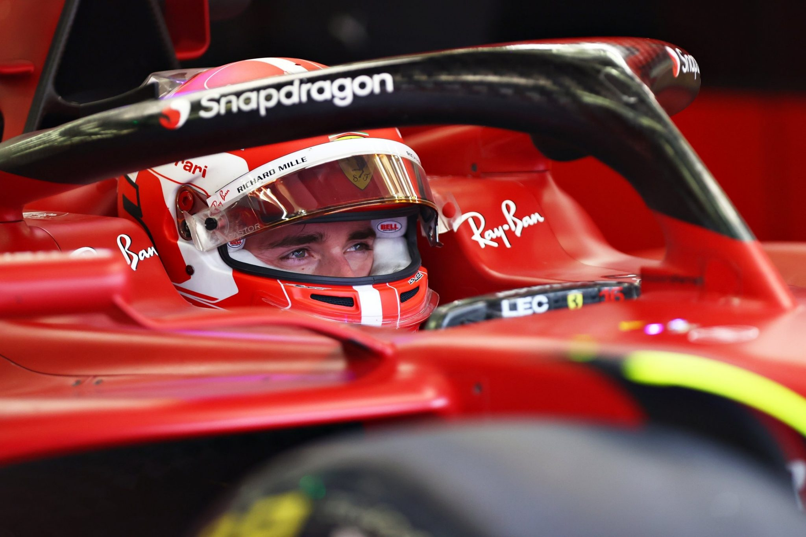
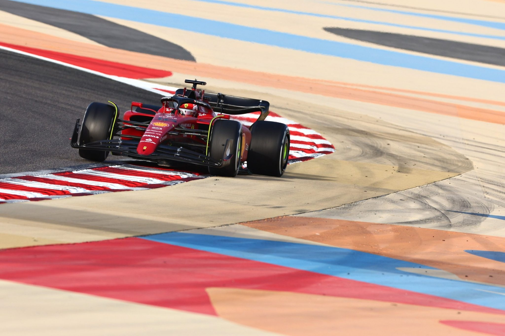
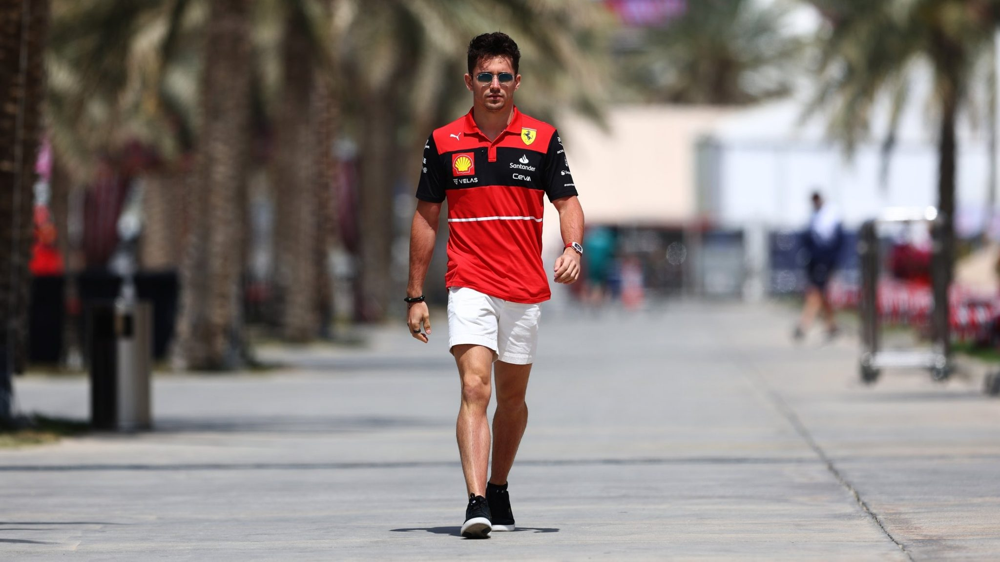
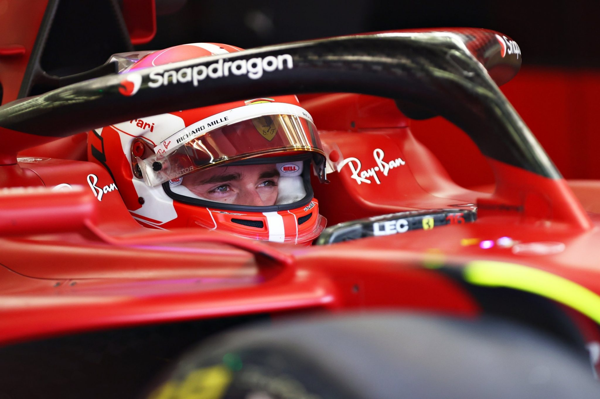

Born in the Mediterranean idyll of Monaco, Leclerc arrived in F1 on a tidal wave of expectation.
Practically peerless on his way to the GP3 and Formula 2 crowns, he showcased a dazzling array of skills from scorching pole positions,
commanding victories – even when his car caught fire twice at Silverstone – to an ability to muscle his way through the pack.
Winning back-to-back championships also taught Leclerc how to handle pressure, another useful tool in the big pond of Formula 1 racing.
Stepping up to F1 in 2018, Leclerc showed flashes of ballistic pace on Saturdays and racing brilliance on Sundays,
dragging his Sauber beyond its limits – and earning himself a money-can’t-buy race seat at Ferrari for 2019,
stepping into the shoes of the Scuderia’s last world champion, Kimi Raikkonen.
There he immediately put the cat among the proverbial pigeons, unafraid to go wheel-to-wheel with established number one,
Sebastian Vettel. A maiden F1 victory at Spa was followed by another a week later on Ferrari’s hallowed home turf of Monza.
The tifosi had found another new hero – who then became the first man to out-score Vettel over a season with the Scuderia,
a feat he repeated in crushing fashion the following year.
Out of the car, Leclerc is modest and thoughtful - but then he is on his own very personal mission.
This exciting young talent is racing for his late father Herve and his friend and mentor Jules Bianchi, the F1 driver who died in 2015.
On the evidence so far, he is doing them both proud.
  
| Team | Ferrari |
|---|---|
| Country | Monaco |
| Podiums | 23 |
| Points | 835 |
| Grand Prix entered | 101 |
| World Championships | N/A |
| Highest race finish | 1 (x5) |
| Highest grid position | 1 |
| Date of birth | 15/10/1997 |
| Place of birth | Monte Carlo, Monaco |
Biography
Born in the Mediterranean idyll of Monaco, Leclerc arrived in F1 on a tidal wave of expectation.
Practically peerless on his way to the GP3 and Formula 2 crowns, he showcased a dazzling array of skills from scorching pole positions,
commanding victories – even when his car caught fire twice at Silverstone – to an ability to muscle his way through the pack.
Winning back-to-back championships also taught Leclerc how to handle pressure, another useful tool in the big pond of Formula 1 racing.
Stepping up to F1 in 2018, Leclerc showed flashes of ballistic pace on Saturdays and racing brilliance on Sundays,
dragging his Sauber beyond its limits – and earning himself a money-can’t-buy race seat at Ferrari for 2019,
stepping into the shoes of the Scuderia’s last world champion, Kimi Raikkonen.
There he immediately put the cat among the proverbial pigeons, unafraid to go wheel-to-wheel with established number one,
Sebastian Vettel. A maiden F1 victory at Spa was followed by another a week later on Ferrari’s hallowed home turf of Monza.
The tifosi had found another new hero – who then became the first man to out-score Vettel over a season with the Scuderia,
a feat he repeated in crushing fashion the following year.
Out of the car, Leclerc is modest and thoughtful - but then he is on his own very personal mission.
This exciting young talent is racing for his late father Herve and his friend and mentor Jules Bianchi, the F1 driver who died in 2015.
On the evidence so far, he is doing them both proud.
Gallery
  